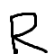
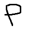

ジャッキー包丁
初動から狩りまくります
とりあえずこれで
あああ
 |
1 | 2 | 3 | 4 | 5 | 6 | 7 | 8 | 9 | 10 | 11 | 12 | 13 | 14 | 15 | 16 | 17 | 18 | 19 | 20 |
| 1 | 2 | 3 | 4 | 5 | 6 | 7 | 8 | 9 | 10 | 11 | 12 | 13 | 14 | 15 | 16 | 17 | 18 | 19 | 20 | |
 |
1 | 2 | 3 | 4 | 5 | 6 | 7 | 8 | 9 | 10 | 11 | 12 | 13 | 14 | 15 | 16 | 17 | 18 | 19 | 20 |
|  | 1 | 2 | 3 | 4 | 5 | 6 | 7 | 8 | 9 | 10 | 11 | 12 | 13 | 14 | 15 | 16 | 17 | 18 | 19 | 20 |
|  | 2 | 3 | 4 | 5 | 6 | 7 | 8 | 9 | 10 | 11 | 12 | 13 | 14 | 15 | 16 | 17 | 18 | 19 | 20 |
初動
とりあえず4人くらいだったら港スタートで、それ以上いたら工場にする
教会
ピアノ線はぜったいとる。それで武器ができる
墓場
ここが俺の墓場
- 鎖
- 羽
- 竹
掌の上で少し落ちついて書生の顔を見たのがいわゆる人間というものの見始であろう。
- この時妙なものだと思った感じが今でも残っている。
- 第一毛をもって装飾されべきはずの顔がつるつるしてまるで薬缶だ。
- その後猫にもだいぶ逢ったがこんな片輪には一度も出会わした事がない。
のみならず顔の真中があまりに突起している。そうしてその穴の中から時々ぷうぷうと煙を吹く。どうも咽せぽくて実に弱った。